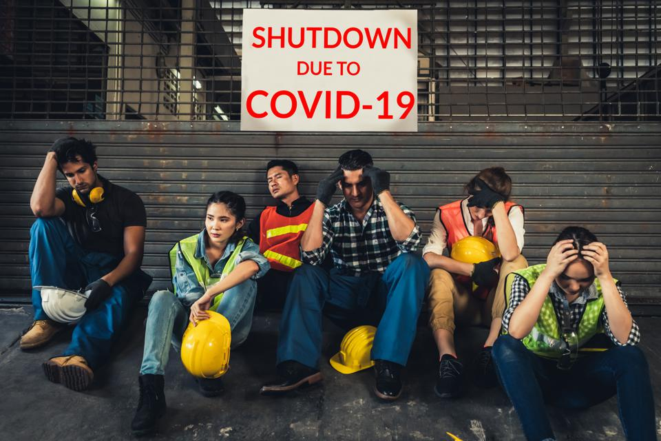
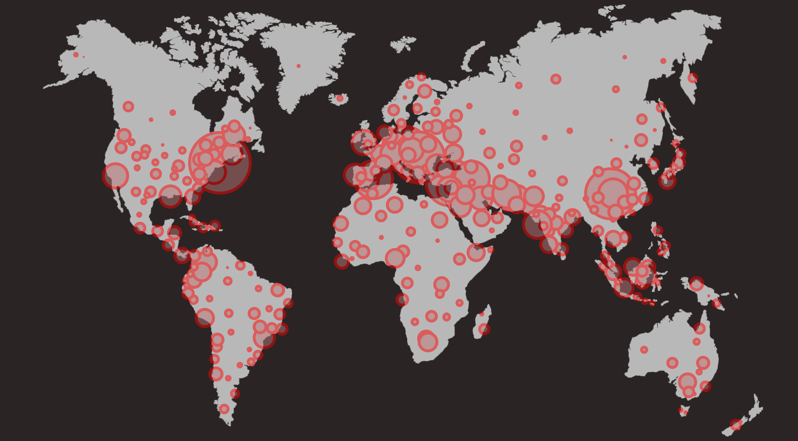

In this time of pandemic, there are a lot of issues going on not only in our country but also the world. We're quarantined for a couple of months and this leads to some people losing their jobs. Throughout this time, many families suffered from poverty due to the spread of Covid-19, people are not earning enough money to provide the needs of their family throughout this pandemic.Right now, there are lots of people who got back to work but also many did not get their jobs back. Not only do they work hard for their family but they also sacrifice their lives to work, we all know that Philippines does not have enough equipments to provide all employees especially the ones in the hospitals to protect them and avoid their selves from having Covid. Even though some people adapted to the situation and started businesses online, we cannot deny the fact that some of them are not earning enough money.This is even worse for the ones who are already suffering poverty before Covid because they are now more limited on what they are allowed to do while following the safety precautions and policies of the government, it is much harder for them to earn money because they already is suffering from poverty, the only time that they are very sure that they can eat is when the government give them relief goods which is good for about 1 week. Poverty is already the worst issue in the Philippines before Covid struck, but now, with Covid spreading around the world, it's even worst than before. We should be aware about this issue and help one another to rise from poverty.

Many jobs have no paid sick leaves. Irregular workers, including those who are working per output, are particularly at risk. Working indoors is not a viable option for all workers because some people work on crowded areas or remote areas. Crowding cannot be avoided in mass transport systems. In times of crisis, poor women and girls are affected the most because many of them form part of this workforce, but are still expected to do unpaid care and domestic work, which only tends to increase when caring for sick members of the family. Because of this, poverty would be the result of this pandemic. Many informal, micro-, small-scale, and even up to medium-scale enterprises will take the hit as compared to the larger and more established businesses. Many may have to stop operations or close down because they would not be able to absorb the shocks to the economy. Hoarding of essential goods such as soap, alcohol, and basic food items only raises market prices and creates access barriers. Stocking up on food and medicines is impossible for those without regular incomes, savings, the unbanked, or those without access to financial services.
Despite of the current situation of many people that are experiencing this type of problem, other people are lucky to have such blessings within their homes. Other than the pandemic, one bigger problem that most people are currently facing is Unemployment, which already has been a problem in the country for years before the pandemic even have occured. According to Philippine Daily Inquirer, about 4.5 million Filipinos have lost their jobs in 2020, with the unemployment rate at 10.4 per cent - the highest in 15 years, the government reported, due to the Covid-19 pandemic and the lockdown shuttering thousands of businesses. This means that many people has lost their way of earning money, which has a really big impact to the living and livelihood of those people.

In addition to that, the South African scientist discovered a so called new variant of covid 19 which shocked the whole world and it caused more fear to the individuals. One reason to that is because we all know that covid 19 already affected the whole livelihood of the people in the whole world and it also took millions and millions of life around the world, how much more if there is a new variant which they said, spread more and faster than the first variant. It sounds really devastating but we need to trust the experts and let them find a way in order to find an effective vaccine and as for now, we need to think of our safety first. The variant can be found across UK except Northern Ireland, but it is heavily concentrated on London and luckily, after the Philippines recieved the news, they took immediate reaction and closed all the international airports and cancelled all flights to prevent the possible spread of the new variant in the country, all thanks to our government. However, even if we are not affected, we need to pray for the individuals that are affected by covid 19 for guidance, and let us help them not to lose hope because we all know that this will end soon.

Group 1-9A Balboa Bonghanoy Cordova Espigar Piano